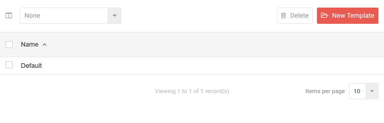
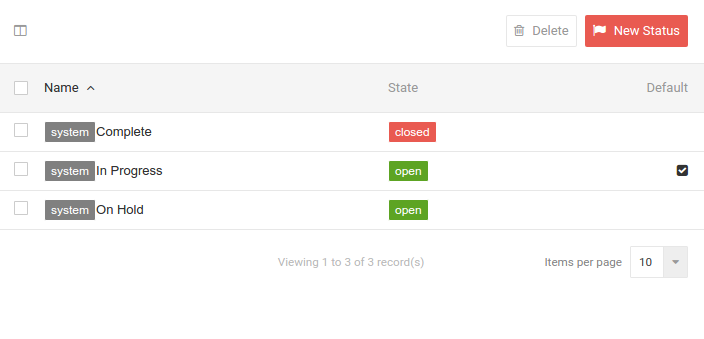

Project Settings¶
Project Templates¶
Here you can setup templates for projects. Included when you first log in is a default template which contains the most basic fields for a template.

To create a new template click on New Template. To delete select a template with the corresponding check box and click on Delete.
Reference Mask¶
The reference mask field allows you to specify how projects using the template should have their references generated. By default this will be an incrementing number, global to your account.
You can customise the reference by using any text and the fields below.
| Field | Description |
|---|---|
| {{ number }} | The next available project number |
| {{ code }} | The new project's department code field |
| {{ name }} | The new project's name |
For example, assuming you have a department with the code SUPPORT a reference mask of...
ZE-{{ code }}-{{ number }}
Would become...
ZE-SUPPORT-1000
Statuses¶
Projects have default statuses which indicate completion status and are automatically assigned during operation. The default statuses which associate with projects are Complete, In Progress and On Hold.

To create a new status click on New Status.
Roles¶
Project roles differ from user roles in that they are used to give access to team members within your organisation whereas user roles are used to define management of projects.
For more detailed information on projects go here.
Back to Settings Menu
Back to Documentation Menu